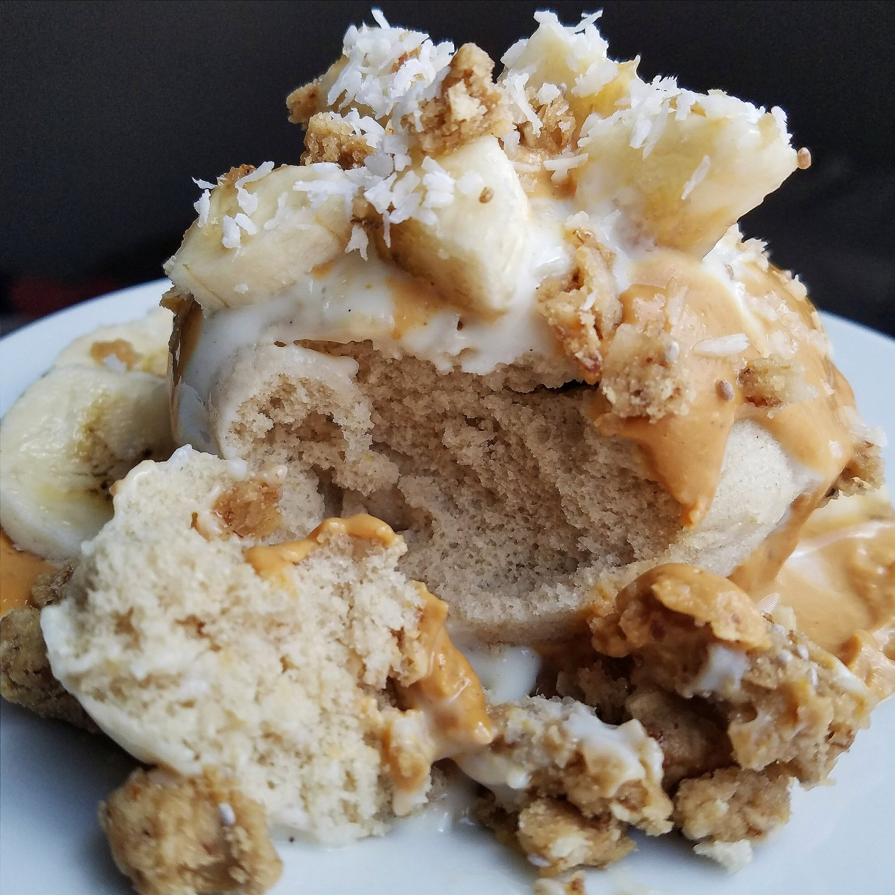
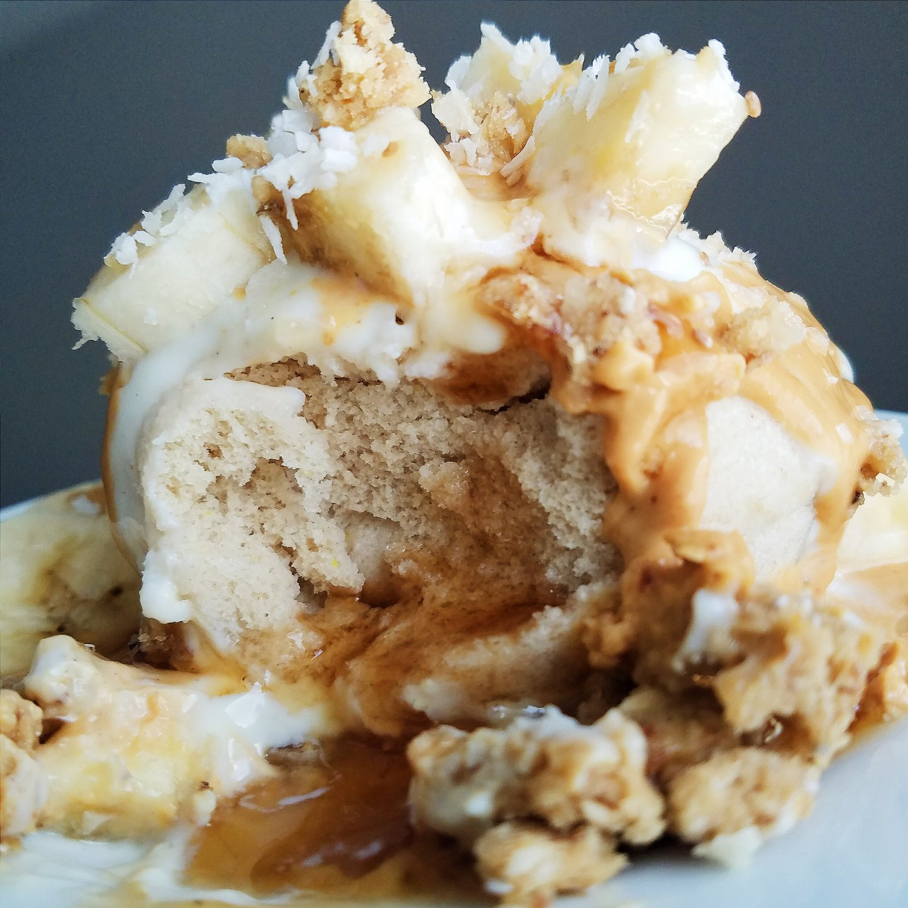

Vegan Toffee Mugcake (gluten free)


Single serve vegan toffee mugcake made in 1 minute with just 5 ingredients? Yes - you don't have to do the math to know that this sugar free, vegan, gluten free recipe is an all-around winner. Simple, fluffy, and absolutely delicious!
I found myself conversing with...myself...right before diving into this mini cake celebration. Which...isn't too different from any other day hahah.
"Me, party of 1? Me, party of 1? Your mugcake party is ready"
"Oh thanks, Me!!""Enjoy...""Oh I will!"
I talk to myself daily; I'm rather easily entertained.
But really, I had this strong urge to just celebrate the day by adding this into my afternoon. It certainly worked and made me smile. :) I've actually been making this recipe often this last week! I've had it decked out for breakfast or an afternoon snack repeatedly, hence the decreased posts lately... Which. Let's talk about that.
I'm still stranded at home without a car. It's been 3 weeks since the crash :( and the car is ALMOST fixed up... That means Pesto has been with the babysitter 3 weeks too and I misss himmmmm. You'd think I'd have a lot of free time to just stay at home and bake new recipes, but no. First limiting factor is getting to the store for ingredients. And second limiting factor is...I'm just kind of in a funk. Nothing serious, just feeling unmotivated by staring at the same walls every day. I've got a nice routine of work, chiropractor, bike, sleep, but doing the same thing over and over without my car or dog is just sad. Plus I'm still in a lot of pain so it's hard to really sit at a computer and do anything other than laying on my bed with a laptop to watch movies. Meh.
So sorry about the laziness. It'll come back, I swear. I can feel things surging with this vegan toffee mugcake!! I'm also working on a load of recipes to release at once, so it'll all hit you like BAM!! Don't pass out please, I'll try not to hit too hard.
I have been switching up the flavors here and there since the recipe is so simple, but I just love toffee the most!! This stevia makes it so easy to add flavor. I topped my personal cake with vanilla soy yogurt, a peanut butter drizzle (2 tbsp crazy Richards peanut butter powder, 2 tbsp water, and stevia drops), coconut banana Too Sum Foods bar, sliced banana, and shredded coconut. Such a tasty combination!
I love the fluffy texture and simplicity of this vegan toffee mugcake recipe. Give it a go and let me know what you think!!
Vegan Toffee Mugcake
Serves: 1
-
1/4 cup buckwheat flour
-
1/4 cup unsweetened almond milk
-
1/2 tsp baking powder
-
1/8 tsp baking soda
-
7-8 English toffee liquid stevia drops
Mix everything in a mug or small bowl. Microwave for 45-60 seconds, and that's it!!! So so easy. Top with whatever you want!